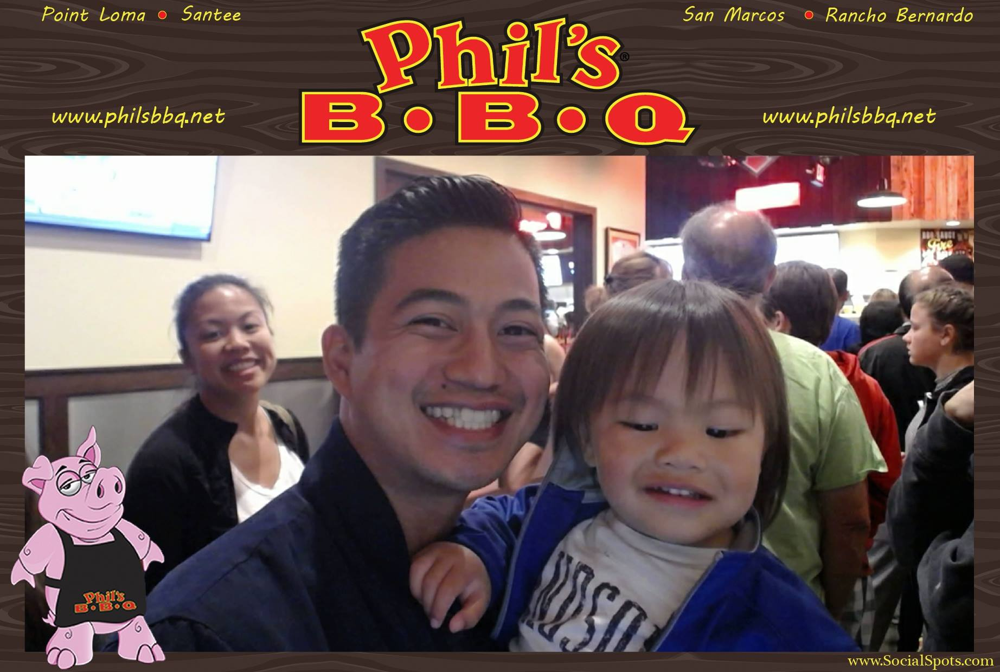

#Danilo Carandang Aspiring Full Stack Javascript and Hybrid Mobile App Developer
Currently
I’m a student at SoftStack Factory, due to finish around January 2017. During my bootcamp I’ve taken up an interest in mobile technologies and web development.
Education
Fall 2016-17
SoftStack Factory - San Diego, CA Certificate of completion
Spring 2016
Miramar Community College - San Diego, CA Certificate of Performance:Music Production and Engineering : Music
Continuing education in Music production and Engineering
Spring 2005
Mt. Carmel High School - San Deigo, CA High School Diploma
Technical skills
- HTML and CSS
- Javascript
- Angular 1 & 2
- Node.js
- Express.js
- MongoDB
- Ionic 1 & 2
Projects
CV
I created a this web page to show off my CV.
Midterm Project - Weather Watcher App
IdSentral Website
Achievements
Customer Service Researched, calmed and rapidly resolved client conflicts to prevent loss of key accounts.
Customer Interface Greeted customers upon entrance and handled personal and merchant account transactions, wires, safe deposit box access, recording, and surrendering. Assisted customers over the phone regarding store operations, product, promotions and questions.
Experience
2014-16
Pizza Hut - Delivery Driver
Providing exceptional customer service in store and on delivery in a safe and timely manner. Actively taking initiative in learning multiple facets of the job working as a team member performing cashier duties, product assistance and cleaning.
2015-16
Three Treasures Cultural Arts Society - Assisstant Program Coordinator, Music Teacher
Worked during the school year as the assisstant program coordinator for Crown Point Junior Music Academy and as the music teacher. Taught elementary school students the fundamentals of music theory and how to play the ukulele during the normal school year and the piano over the summer.
2009-14
Union Bank - Senior Teller
Responsible for completing customers transactions in a timely manner and guaranteeing high level of customer service. Recommended, selected and helped locate products based on customer needs and desires. Regularly sought opportunities to up sell and add on additional merchandise. Processed and issued cashier’s checks and money orders for customers.
Hobbies
- Coding
- Cooking
- Learning
- PodCast
- Personal Development